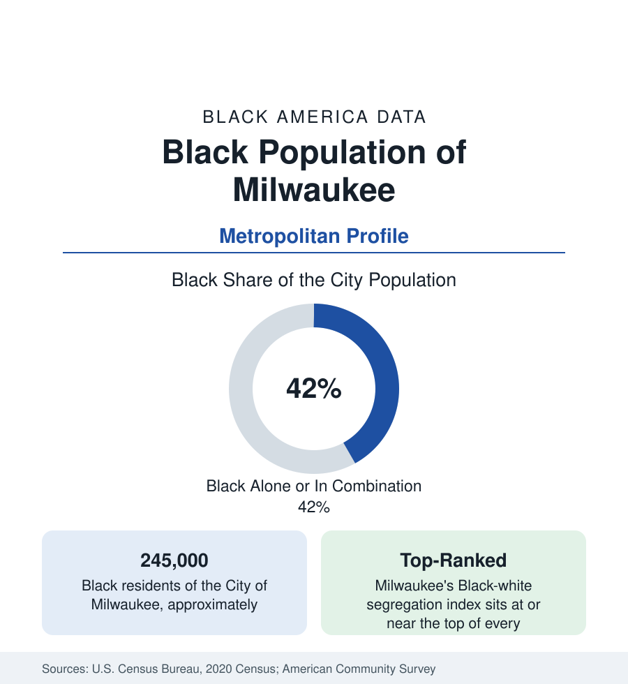

Black Cities
Black Milwaukee: Two in Five, in America's Most Divided Metro
Milwaukee holds about 245,000 Black residents in the city — two in five — in the metro that segregation indices have ranked at the top for decades. The census profile.

Milwaukee holds about 245,000 Black residents within the city — Black alone or in combination, two in five of its 577,000 people — and about 280,000 across the metropolitan area. Milwaukee's Black community formed later than its Great Lakes peers': the city's manufacturers recruited Black labor heavily only in the postwar decades, and the population multiplied tenfold between 1940 and 1970 into housing confined to the north side. The modern data are defined by a superlative no city seeks: by the standard segregation measures, Milwaukee is the most divided large metro in America or within a place of it in every published ranking.
Bronzeville and the North Side
Black Milwaukee's historic heart was Bronzeville, along Walnut Street west of the Milwaukee River — the commercial and cultural district of the small prewar community, largely cleared by freeway construction and redevelopment in the postwar decades, its name revived in the modern cultural district along Martin Luther King Jr. Drive. The community's residential body spread north and west from it: Harambee, Riverwest's edge, Sherman Park (a district famous in the housing literature for its block-by-block integration battles of an earlier era, and its sturdy homeowner stock), and the vast northwest side — the city's largest Black landscape, of postwar subdivisions and garden apartments, reaching to the county line at Brown Deer and Glendale. The south side, historically Polish and increasingly Latino, holds a smaller Black population; the east side, the university and lakefront districts, smaller still.
The Segregation Numbers
The dissimilarity index — the standard measure, expressing the share of a group that would have to move for every neighborhood to match the metro's composition — places Milwaukee's Black-white figure in the low eighties in recent computations, at or beside the top of the large-metro table alongside Detroit, New York, and Chicago. The data behind the index are geographic: a metro whose Black population is concentrated in one city's northern half, ringed by suburbs (Waukesha County above all) that remain among the least Black of any suburban counties adjoining a major Black metropolis in the nation. Income segregation compounds the racial measure in the tract data: Milwaukee's Black middle class and its Black poor are themselves more separated from one another than in most metros in this section. The indices have improved slowly across recent decades — the direction is consistent, the pace generational.
Economy and Indicators
The indicators carry the segregation's signature. Black Milwaukee's poverty rate runs near 30 percent in the survey data; household income trails the peer-metro Black medians in this section; homeownership — in a city of modest housing costs — runs in the high twenties percent for Black households, among the lowest big-city figures, against the legacy of the lending maps and the contract-buying era documented for the north side. Employment centers on the health systems (the region's largest employers), education, manufacturing's remainder, and the public sector. The counterweights in the data: a substantial Black suburban homeowner class on the northwest side and in Glendale and Brown Deer, and institutional anchors from the Milwaukee Public Schools' workforce to the Black media market and church networks that rank among the Midwest's most organized.
Composition and Change
Black Milwaukee is Great Migration-descended in the main — Mississippi and Arkansas roots predominate in the founding cohorts' birthplace data — with a younger profile than the city overall and slow growth by natural increase against net out-migration to Chicago, the South, and the region's own suburbs. Recent survey years register small African immigrant communities joining the north side. The city's total population has stabilized after decades of decline, and its Black population with it — the profile of a mature migration city whose challenges are distributional rather than demographic.
Reading the Milwaukee Numbers
Milwaukee is the profile where a single index organizes everything else: the segregation measure explains the shape of the poverty data, the school data, the health data, and the suburban map more parsimoniously than any other fact about the city. Two in five of the city, a sixth of the region, and a distribution that the nation's demographers use as their benchmark case — the numbers here describe both a community and a measurement the field makes by reference to it.
More in Black Cities
Black Atlanta: Population, Distribution, and Growth of a Black Metropolis
Metro Atlanta holds more than two million Black residents — roughly one in three, second only to New York. The suburban distribution, migration history, and composition of Black Atlanta in the census data.
Black New York: The Largest Black Population in America
The New York metropolitan area holds about 3.4 million Black residents — more than any metro in the nation — and the city itself about two million. The census profile.
Black Washington: The District and the Metro
The Washington metro holds about 1.6 million Black residents, and the District itself — long a majority-Black city — now records a Black share near 41 percent. The census profile.
Source: U.S. Census Bureau, 2020 Census; American Community Survey; Population Estimates Program.